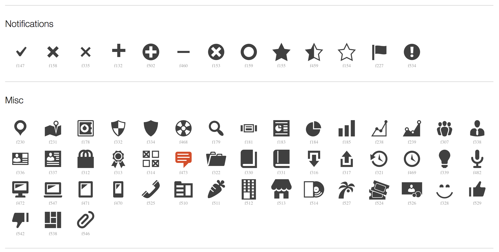

Let's Make some Testimonials
One common function
register_post_type( $slug, $arguments )
Hook into init
add_action( 'init', function() {
register_post_type( $slug, $arguments );
} )
Name our CPT
add_action( 'init', function() {
register_post_type( 'testimonial', [] );
} )
Add some options
add_action( 'init', function() {
$arguments = [
'public' => true,
'labels' => [ 'name' => 'Testimonials' ... ],
'archive' => [ 'slug' => 'testimonials' ],
'menu_icon' => 'dashicons-testimonial',
'supports' => [ 'title', 'editor', 'thumbnail' ],
'show_in_rest' => true,
'rest_base' => 'testimonials',
];
register_post_type( 'testimonial', $arguments );
} );
Public Support
$arguments = [
'public' => false, // Not queryable, no templates
'public' => true, // Available everywhere
];
Custom Admin Labels
$arguments = [
'labels' => [
'name' => 'Testimonials',
'singular_name' => 'Testimonial'
...
],
];
Custom Icon
$arguments = [
'menu_icon' => 'dashicons-testimonial',
];

Admin Field Support
$arguments = [
'supports' => [
'title',
'editor',
'author',
'thumbnail',
'excerpt',
'comments',
'revisions',
],
];
Admin Field Support
$arguments = [
'supports' => [
'title',
'editor',
'revisions',
],
];
Archive URLs
$arguments = [
'archive' => false,
];
$arguments = [
'archive' => [ 'slug' => 'testimonials' ],
];
Enable REST Support
$arguments = [
'show_in_rest' => true,
'rest_base' => 'testimonials', // Optional.
];